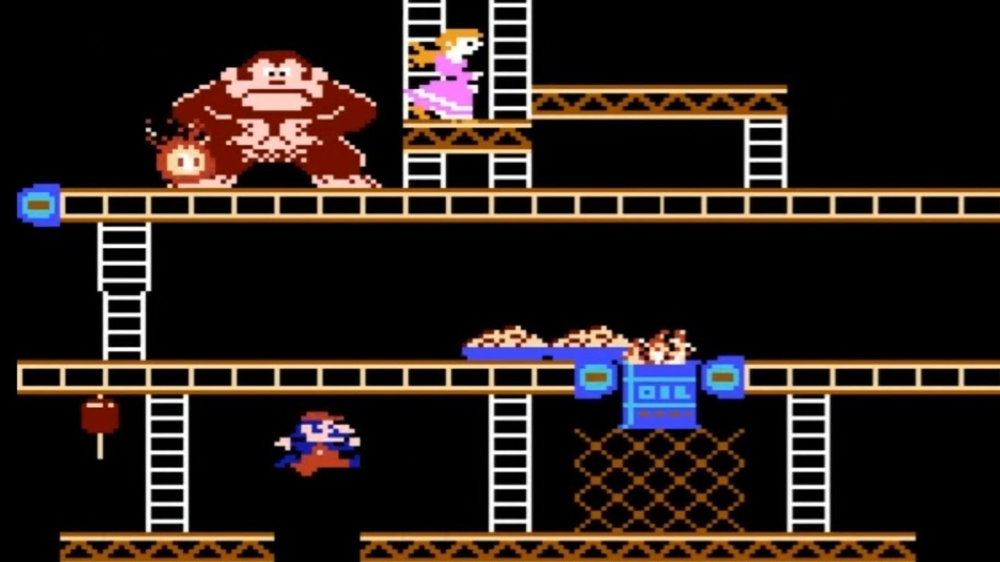
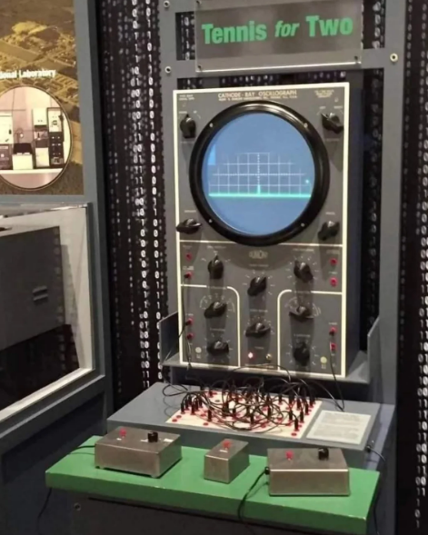
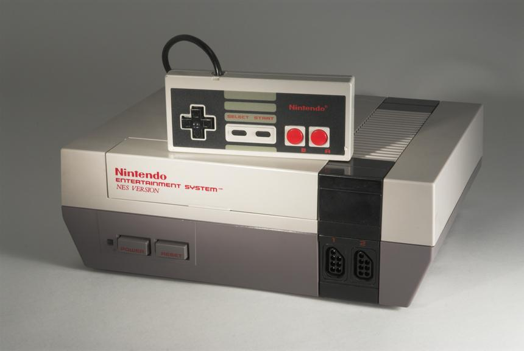

La era arcade (1970 - 1985)
En 1972 aparece Pong, el primer éxito comercial. A partir de ahí, las máquinas recreativas se expandieron por todo el mundo. Juegos como Space Invaders, Pac-Man y Donkey Kong marcaron una época dorada.

Los videojuegos nacieron como experimentos científicos. En los años 50, investigadores crearon programas simples para demostrar el funcionamiento de los ordenadores. Uno de los primeros fue Tennis for Two (1958), seguido por Spacewar! (1962), considerado el primer videojuego jugable de la historia.

En 1972 aparece Pong, el primer éxito comercial. A partir de ahí, las máquinas recreativas se expandieron por todo el mundo. Juegos como Space Invaders, Pac-Man y Donkey Kong marcaron una época dorada.

La primera consola doméstica fue la Magnavox Odyssey (1972). Pero el verdadero boom llegó con Atari 2600 en 1977, que llevó los videojuegos a millones de hogares.

Tras la crisis del videojuego de 1983, Nintendo rescató la industria con la NES y personajes como Mario y Zelda. En los 90 llegaron los gráficos 3D con PlayStation y Nintendo 64. En los 2000 surgieron las grandes sagas modernas: Halo, GTA, God of War…
Hoy en día, los videojuegos son una industria multimillonaria con tecnologías como realidad virtual, mundos abiertos y juegos online masivos.
